Hidakacho, Wakayama: things to do, food and stays
Hidakacho · Wakayama
Hidakacho
Highlighted on the Wakayama map.
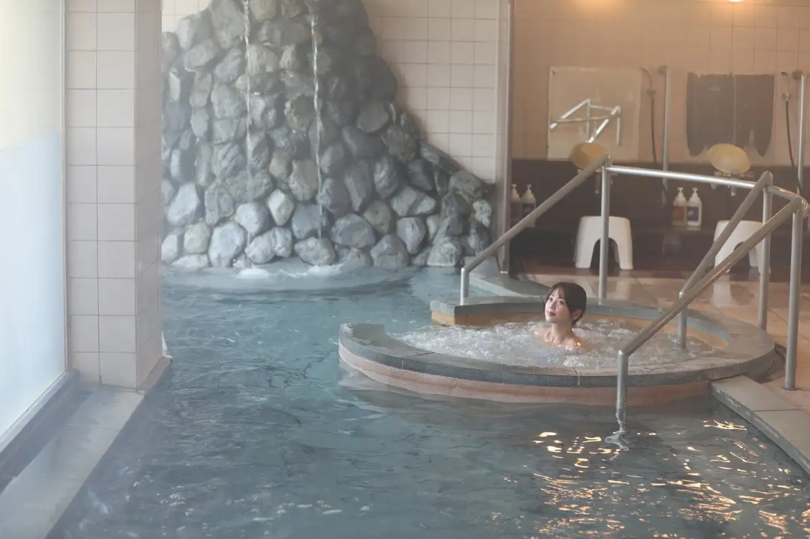
Stay
民宿はまよし
Minshuku Hamayoshi
ゲストハウス・コーストカフェ楽
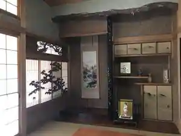
Guesthouse Kosuto Cafe Raku
Guesthouse in Shiga, Hidakacho with a renovated traditional house.
料理宿 橋本荘
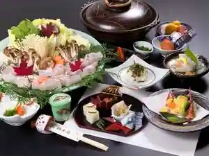
Ryori Yado Hashimoto So
Dining
割烹岬
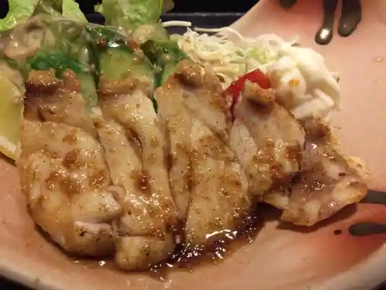
Kappo Misaki
みちしお亭
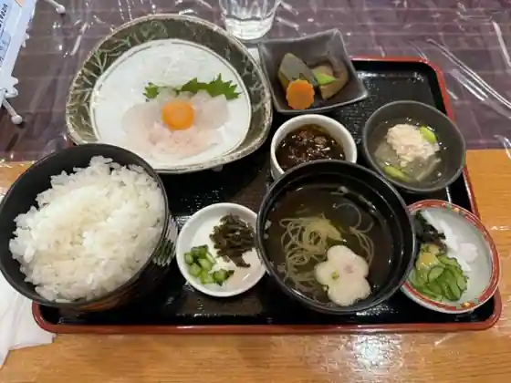
Michishio Tei
コンペイトウ
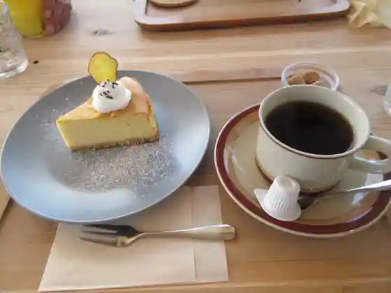
Konpeitou
波満の家
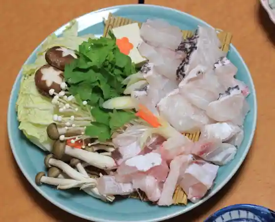
Nami Man No Ie
はまよし
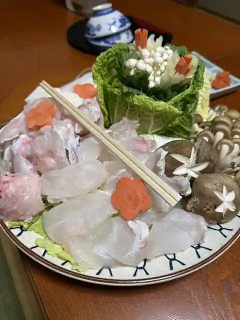
Hamayoshi
いちりん
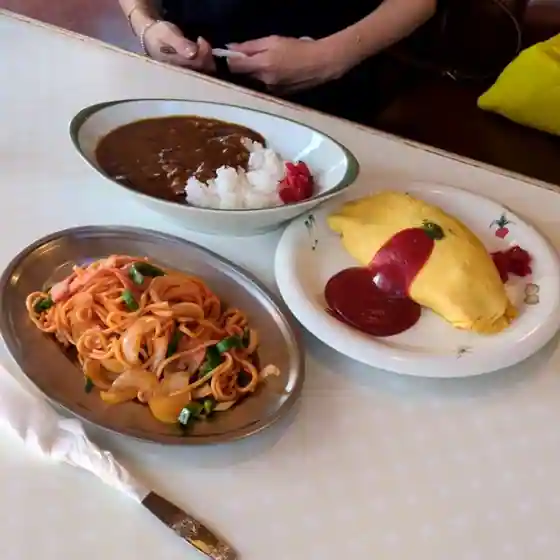
Ichirin
ぱちぱち みんなの大衆酒場
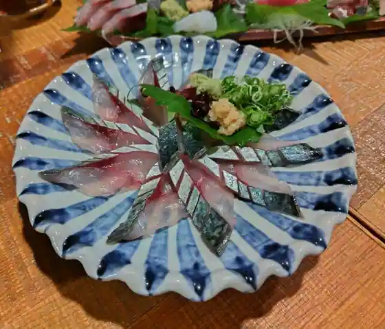
Pachipachi Minnano Taishu Sakaba
ひいのの
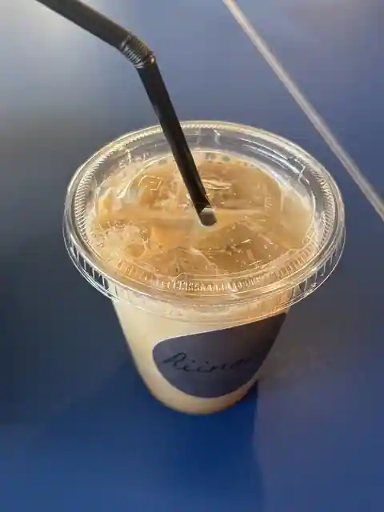
Hinono
AZURE
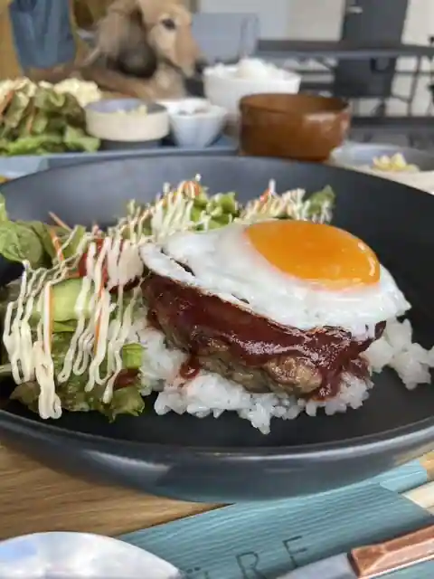
AZURE
幸福亭 みむら
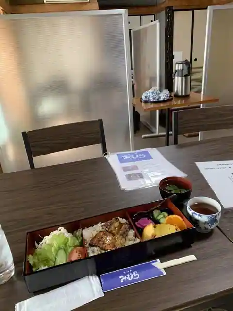
Kofuku Tei Mimura
シャンセ シャンセ
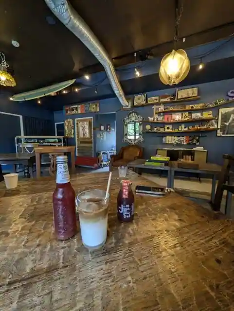
Shanse Shanse
シーサイド うぶゆ
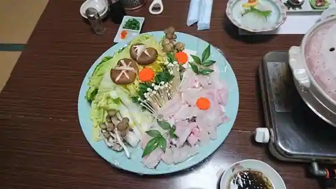
Shisaido Ubuyu
村崎荘
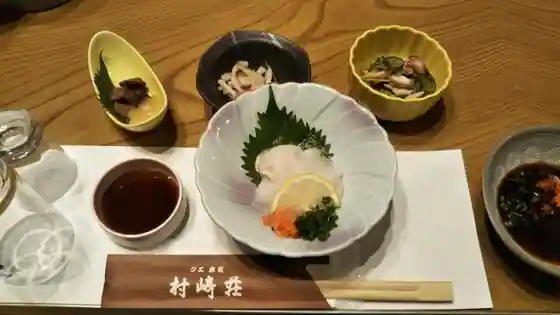
Murasaki So
コーストカフェ 楽
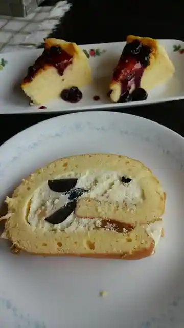
Kosuto Cafe Raku
海の駅 あお
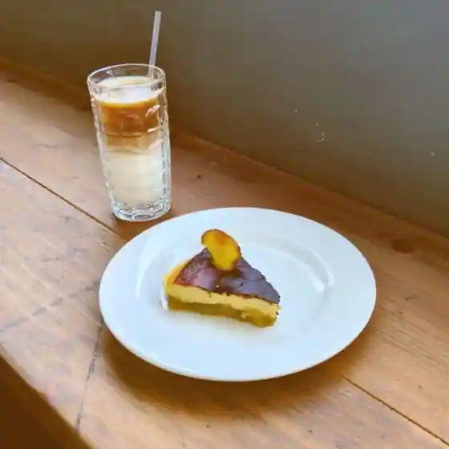
Umi No Eki Ao
はまゆう
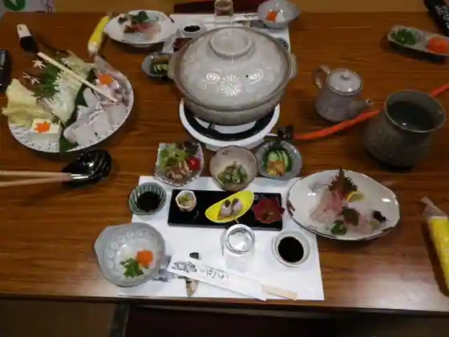
Hamayu
成味寿司
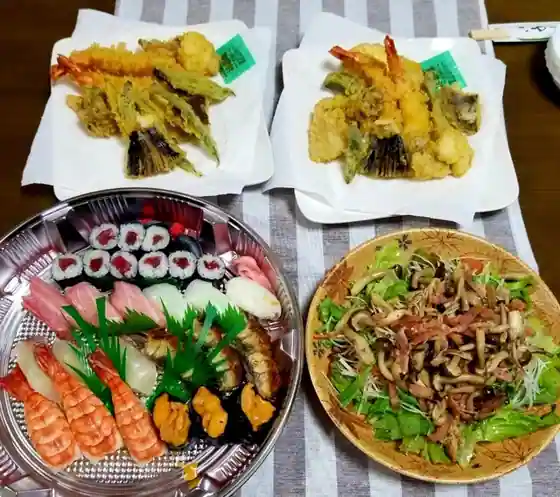
Sei Aji Sushi
カフェ れん
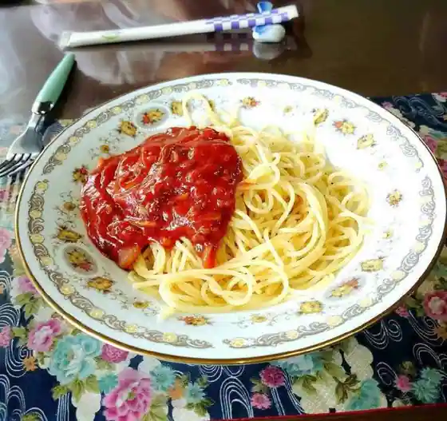
Cafe Ren
Sights
Onsen Kan Umi Village Michishio Baths
Ubuyu Beach